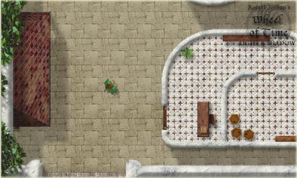
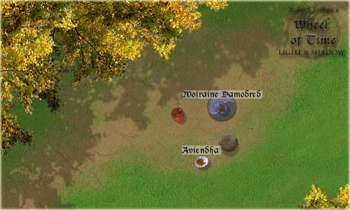

18 December 2001
We released a small patch for wotlas 1.1, available here. Wotlas development will continue next year. If you want to put a link to our site you can use the following image :
Wotlas v1.1 is now available in our download section. Our game server will start running on the 3rd of December. The screenshot section has been updated.

Wotlas version 1.1 should be available for download around the 20th of november. It will correct the bugs you helped us to find in wotlas v1.0. We'll also add some new maps and perhaps new characters. There won't be any other new features. The main game features ( inventory, knowledge base, one power, etc.) will only be added in version 1.2.
Wotlas v1.0 is now available for download ! Go to our Sourceforge download section. To join other players and Wheel of Time raving lunatics, please download the Wotlas Client v1.0. We'll try to be in the game as frequently as possible... but we are all in France... so it will depend on your time zone. If you just encounter ghosts of our characters it means we are not in the game and probably sleeping...
For now, only one game server is available on the Internet ( in France). If you want to bring wotlas to your web server, just download the Wotlas Server v1.0 package and follow the instructions...
Please report any bugs, problems or need for support. Go to our SourceForge project page.

Wotlas v1.0 will be released on the 20th of October. We will continue to code the game until the 15th ( there's still a chat to add to the game ). Our v1.0 won't have lots of features but we still hope you'll like it... 15 days and the wait is over !
The ScreenShot section has opened with the images you can see on this page.